A review of uncertainty quantification in deep learning¶
Uncertainty quantification¶
According to US Dept of energy (2009), uncertainty from many sources should be considered
Stochastic measurement error
Limitations of theoretical models
Numerical representations of models
Approximations
Human error
Ignorance
Predictive uncertainty¶
Consider a statistical learning model that makes predictions \(\hat{y}\) based on previously seen data \((x_{\text{train}},y_{\text{train}})\)
The model’s predictions will have some error \(e = y_{\text{GT}}-\hat{y}\)
We can never know the actual error \(e\)
However, we can try to characterize our confidence in \(\hat{y}\)
Aleatoric Uncertainty¶
Variation that is consistant across repititions of an experiement
Often possible to characterize the distribution accurately
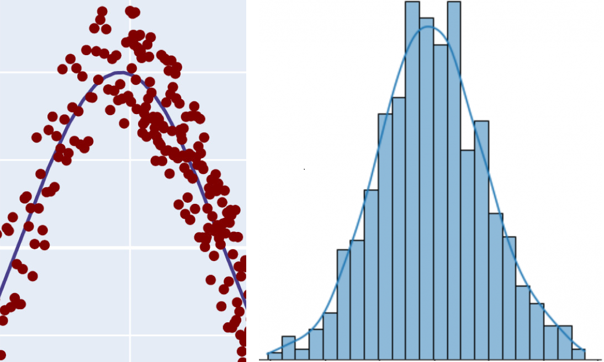
Epistemic Uncertainty¶
Lack of knowledge
Imperfect model or model parameters
Difficult to chacterize the distribution
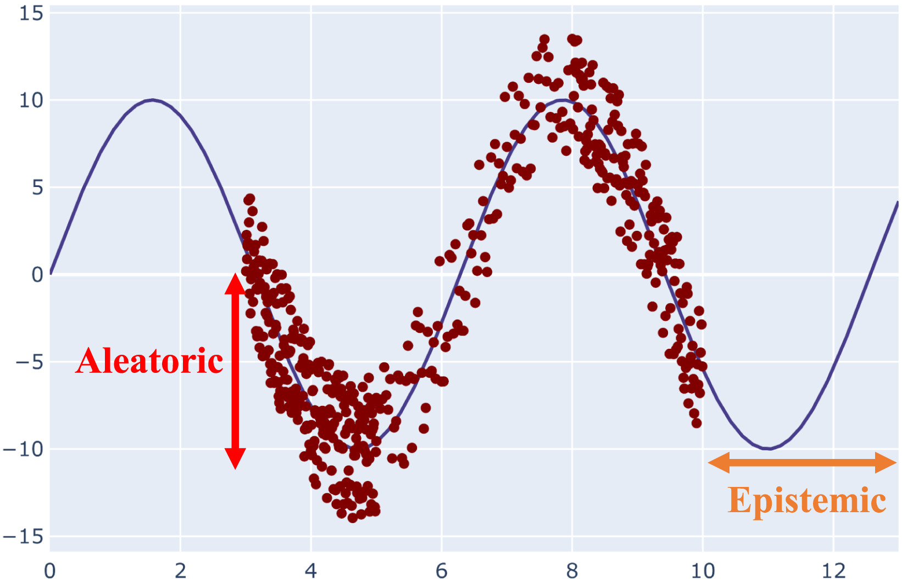
Uncertainty propagation in forward problem¶
Example: Determine uncertainty in restistance from measurements of voltage and current.
Uncertainty in inverse problem¶
Consider an acoustic propagation model governed by the wave equation \(c^2 \nabla^2 p = \frac{\partial^2 p}{\partial t^2}\)
We can check if the parameters fit the data using the forward model
Many combinations of parameter values will fit the data
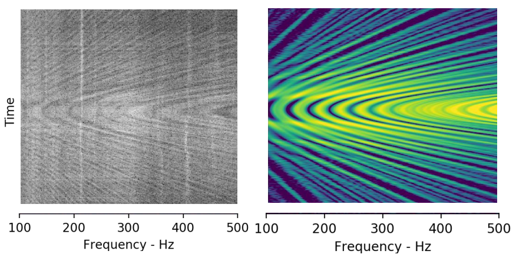
Sources of uncertainty in deep learning¶
Aleatoric
Limited computational resources
Limited training data
Epistemic
Data collection process
Accuracy of training data
Distribution drift
Bayesian neural networks¶
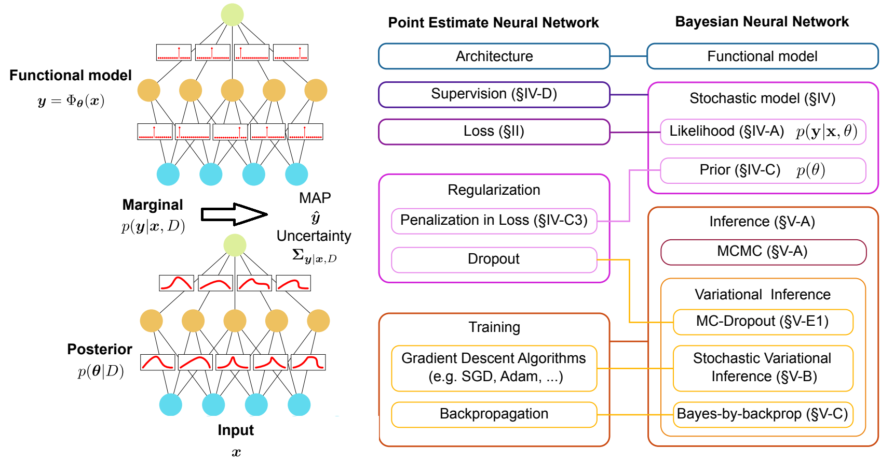
Bayesian neural networks¶
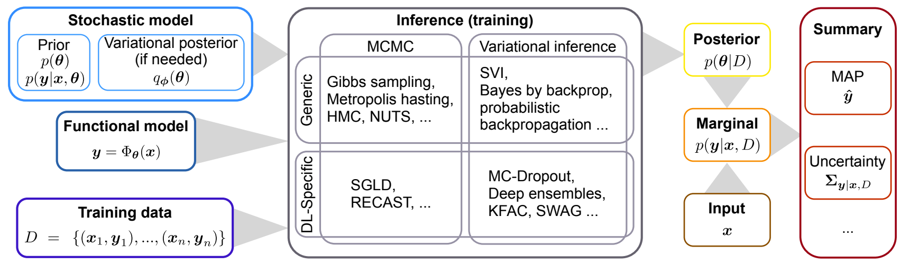
Monte Carlo dropout¶
Monte carlo sampling can be used to obtain posterior in BNN
Extremely expensive. Limited to shallow networks.
Dropout is a common regularization technique in NNs
randomly drop units to prevent excessive codependence
bayesian segnet 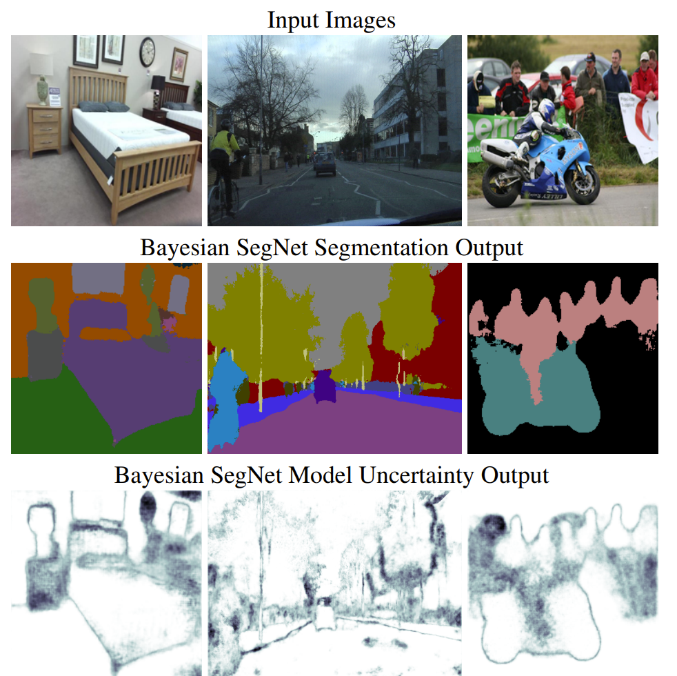
Variational inference¶
Frame the Bayesian inference problem as an optimization problem
Approximate posterior distribution over the weights of the NN
Minimize KL divergence between variational distribution and true posterior
Variational autoencoders¶
Maps high-dimensional data to low-dimensional latent variables
Provides a generative model that can be used for UQ
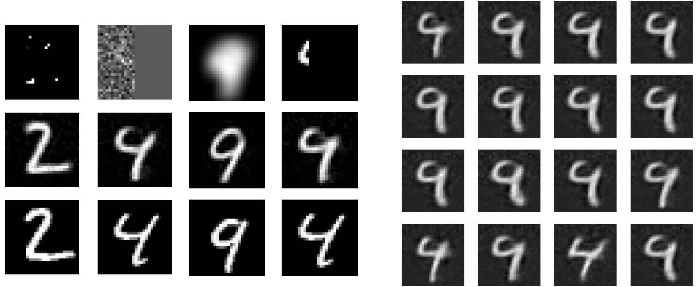
Bayes by backprop¶
Minimize variational free energy
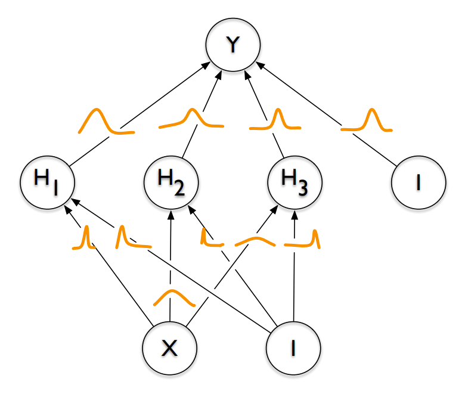
Laplacian approximations¶
Build a gaussian distribution around the true posterior
Use a taylor expansion around the MAP
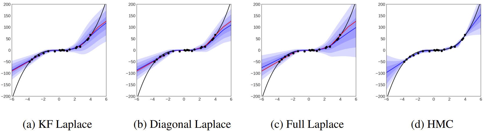
Ensemble techniques¶
An ensemble of models can enchance predictive performance
How can we use an ensemble to generate uncertainty estimates?
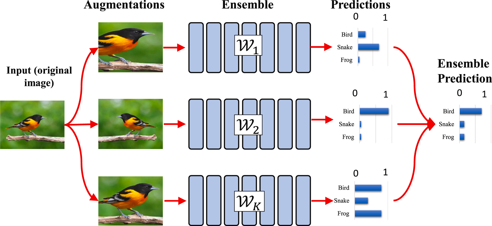
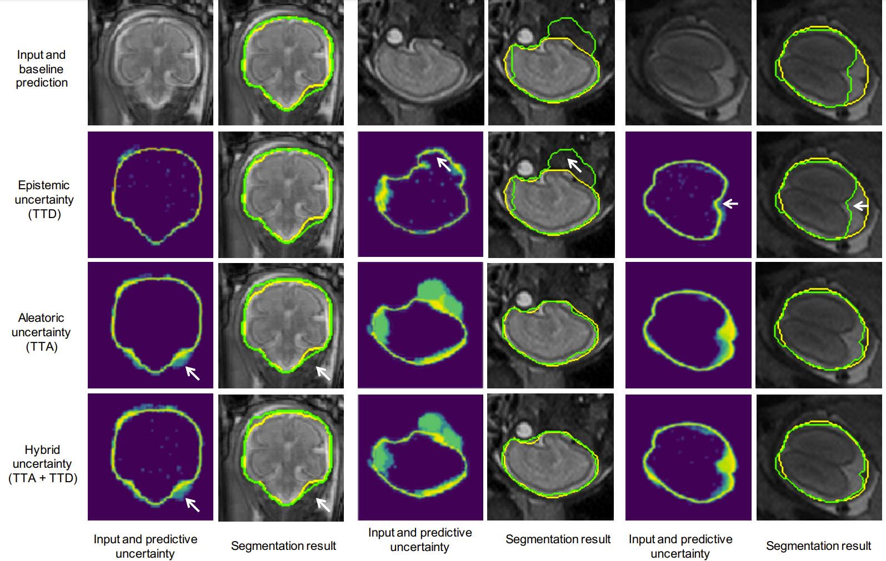
Ensemble techniques¶
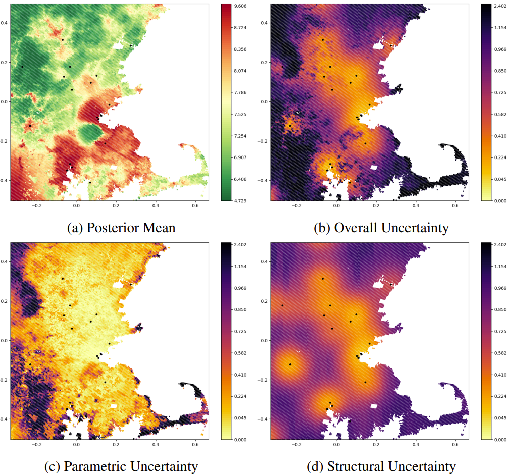